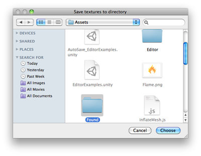

EditorUtility.SaveFolderPanel
public static string SaveFolderPanel(string title,
string folder,
string defaultName);
Description 描述
Displays the "save folder" dialog and returns the selected path name.
See Also: SaveFilePanel, OpenFilePanel functions.

Save Folder Panel.
using UnityEngine; using UnityEditor; using System.IO;
public class SaveFolderPanelExample : EditorWindow { [MenuItem("Example/Save Textures To Folder")] static void Apply() { Object[] textures = Selection.GetFiltered(typeof(Texture2D), SelectionMode.Unfiltered); if (textures.Length == 0) { EditorUtility.DisplayDialog("Select Textures", "You must select at least one texture first!", "OK"); return; }
string path = EditorUtility.SaveFolderPanel("Save textures to folder", "", ""); if (path.Length != 0) { foreach (Texture2D texture in textures) { Texture2D processedTex = texture;
byte[] pngData = processedTex.EncodeToPNG(); if (pngData != null) File.WriteAllBytes(path + "/" + texture.name + ".png", pngData); else Debug.Log("Could not convert " + texture.name + " to png. Skipping saving texture."); }
// Just in case we are saving to the asset folder, tell Unity to scan for modified or new assets AssetDatabase.Refresh(); } } }